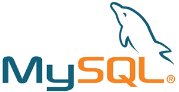

常用关系型数据库汇总
关系型数据库管理系统（RDBMS）有很多种，它们都有各自的优缺点，下表是由 DB-Engines 发布的 2020 年 11月份数据库排名榜单。
MySQL 是一种开源的 SQL 数据库，由瑞典的 MySQL AB 公司开发。MySQL 支持多线程、多用户，并且非常快速，一般的中小型网站都选择 MySQL（C语言中文网也基于 MySQL 数据库部署）。
MySQL 有免费版和收费版，它们的功能和用途（商业/非商业）是有区别的。
SQL Server 是微软公司（Microsoft）开发的一种关系型数据库，只能运行于 Windows 操作系统，它除了支持标准的 SQL 语言，还支持增强版的 T-SQL。

Oracle 是一个大型的、基于多用户的关系型数据库管理系统，它的优势是高并发、高吞吐量以及分布式。不管是 B/S（Browser/Server）模式还是 C/S（Client/Server）模式，Oracle 都是非常不错的选择。
Oracle 几乎支持所有的主流操作系统，包括 MS DOS、OS/2、NetWare、UnixWare、OS/2 以及大多数的 Unix 发行版。
Access 是微软（Microsoft）发布的一款入门级的数据库管理软件，随专业版的 Microsoft Office 安装包一起发布。Access 价格便宜，适合数据量不大、性能要求不高的小型项目。
Access 带有界面，操作起来比较直观，不需要具备非常专业的数据库知识。
Access 使用一种称为 Jet 的数据库引擎，它删除了标准 SQL 的部分功能，同时也扩展了一些标准 SQL 没有的功能，形成了一种独特的 SQL 变种，被称为 Jet SQL。
| 排名 | 数据库 | 类型 | 得分 |
|---|---|---|---|
| 1 | Oracle | 关系型数据库 | 1345.00 |
| 2 | MySQL | 关系型数据库 | 1241.64 |
| 3 | Microsoft SQL Server | 关系型数据库 | 1037.64 |
| 4 | PostgreSQL | 关系型数据库 | 555.06 |
| 5 | MongoDB | 文档数据库 | 453.83 |
| 6 | IBM Db2 | 关系型数据库 | 161.62 |
| 7 | Redis | 键值对（Key-value）数据库 | 155.42 |
| 8 | Elasticsearch | 搜索和数据分析引擎 | 151.55 |
| 9 | SQLite | 关系型数据库 | 123.31 |
| 10 | Microsoft Access | 关系型数据库 | 118.75 |
除了“关系型数据库”，其它类型的数据库统称为 NoSQL 数据库。NoSQL = Not Only SQL ，也即“不仅仅是 SQL”。
本教程选择了一些常用的 RDBMS，并帮助您比较了它们的历史和特性。1. MySQL

MySQL 是一种开源的 SQL 数据库，由瑞典的 MySQL AB 公司开发。MySQL 支持多线程、多用户，并且非常快速，一般的中小型网站都选择 MySQL（C语言中文网也基于 MySQL 数据库部署）。
SQL 的发音为“sessel”，而 MySQL 的发音为“my ess-que-ell”。
MySQL 是跨平台的，可以在 Windows、Linux、Unix 和 Mac OS X 等主流操作系统上运行。MySQL 有免费版和收费版，它们的功能和用途（商业/非商业）是有区别的。
MySQL 简史
- 1994 年，Michael Widenius 和 David Axmark 在 Unix 系统上着手开发 MySQL。
- 1995 年，MySQL AB 公司在瑞典创立。
- 1996 年 5 月，MySQL 1.0 版本在小范围内发布；1996 年 10 月，MySQL 3.11.1 版本公开发布。
- 1998 年 1 月 8 日发布 Windows 版，适用于 Windows 95 和 NT 平台。
- MySQL 最初是 MySQL AB 公司的私有财产，2000 年遵循 GPL 协议开放源代码，免费供大家使用。
- MySQL 3.23 版本，从 2000 年 6 月开始测试，2001 年 1 月正式发布。
- MySQL 4.0 版本，从 2002 年 8 月开始测试，2003 年 3 月正式发布。
- MySQL 5.0 版本，从 2005 年 3 月开始测试，2005 年 10 月正式发布。
- 2008 年 2 月 26 日，Sun 公司收购了 MySQL AB 公司，MySQL 数据库归 Sun 公司所有。
- MySQL 5.1 版本，2008 年 11 月 27 日正式发布。
- 2015 年，MySQL 5.7 版本发布，这是 5.x 的最后一个版本。
- MySQL 跳过了 6.x 和 7.x 版本，于 2016 年 9 月直接发布了 8.0 版本；截止到 2020 年 11 月份，MySQL 的最新版本是 8.0.22。
MySQL 特性
- 使用 C/C++ 编写，性能高
- 跨平台，支持 Windows、Mac OS、Linux、Unix 等各种操作系统
- 可伸缩性和可扩展性
- 很好地支持事务
- 适合 Web 等大数据量应用场景
- 强大的数据保护功能
- 适用于各种应用程序开发
- 易于管理
- 开源、自由、24x7 小时支持
- 总体的使用成本很低
2. SQL Server
SQL Server 是微软公司（Microsoft）开发的一种关系型数据库，只能运行于 Windows 操作系统，它除了支持标准的 SQL 语言，还支持增强版的 T-SQL。
SQL Server 简史
- 1987 年，Sybase 公司发布了用于 Unix 系统的 SQL Server。
- 1989 年，Microsoft、Sybase 和 Aston-Tate 几家公司联合将 SQL Server 移植到 OS/2 平台。
- 1989 年，Microsoft、Sybase 和 Aston-Tate 联合发布了适用于 OS/2 的 SQL Server 1.0 版本。
- Microsoft 终止与 Aston-Tate 的合作，Aston-Tate 退出了 SQL Server 开发。
- 1990 年，SQL Server 1.1 发布，开始支持 Windows 3.0。
- 1994年，Microsoft 再次终止与 Sybase 的合作，买下了 Windows NT 版本 SQL Server 全部版权，此后 Microsoft 开始独立开发 SQL Server。
- 1995 年 6 月，Microsoft 发布了 SQL Server 6.0。对 Microsoft 而言，这个版本是一个重要的里程碑，因为这个版本是独立完成的，没人借他人之手。
- 2000 年，Microsoft 发布了 SQL Server 2000。
- 2001 年，Microsoft 发布了适用于 SQL Server 的 XML。
- 2002 年，微软发布了 SQLXML 2.0（由 XML for SQL Server 更名而来）。
- 2002 年，Microsoft 发布了 SQLXML 3.0。
- 2005 年 11 月 7 日，Microsoft 发布了 SQL Server 2005，这是一次重大的架构变革，原有的很多方面都被重写。
- 2008 年发布 SQL Server 2008，作为上一代产品的升级强化版本。
- 2012 年发布 SQL Server 2012，做出了重大改进。
- 截止到 2020 年 11 月份，最新的公开发布版本是 SQL Server 2019。
SQL Server 特性
- 高性能
- 高可用性，适用于多种应用程序开发
- 数据库镜像
- 数据库快照
- CLR 整合
- 服务代理（Service Broker）
- DLL 触发器
- 排名函数
- 基于数据行的隔离级别
- 内置 XML 的支持
- 支持异常处理
- 支持邮件发送
3. Oracle
Oracle 是一个大型的、基于多用户的关系型数据库管理系统，它的优势是高并发、高吞吐量以及分布式。不管是 B/S（Browser/Server）模式还是 C/S（Client/Server）模式，Oracle 都是非常不错的选择。
Oracle 几乎支持所有的主流操作系统，包括 MS DOS、OS/2、NetWare、UnixWare、OS/2 以及大多数的 Unix 发行版。
Oracle 简史
Oracle 是历史最悠久的数据库之一，今天它已经 43 岁了（1977 ~ 2020）。- 1977 年，Larry Ellison、Bob Miner 和 Ed Oates 成立了软件开发实验室，开始从事 Oracle 开发工作。
- 1979 年，Oracle 2.0 版发布，成为第一个商业的关系数据库和第一个 SQL 数据库。同年，公司更名为 Relational Software Inc（简称 RSI）。
- 1981年，RSI 开始为 Oracle 开发管理工具。
- 1982 年，RSI 更名为 Oracle Corporation。
- 1983 年，Oracle 3.0 版发布，该版本使用C语言进行了重构，并能够运行在多个平台上。
- 1984 年，Oracle 4.0 版发布，包含了并发控制、多版本读取一致性等功能。
- 1986 年，Oracle 上市，每年营业额 5500 万美元。
- 1988 年，Oracle 6.0 发布，对核心组件进行了改写，极大提升了性能。
- 1989 年，Oracle 进入中国市场。
- 2007 年，Oracle 发布了 Oracle 11g，该版本侧重于更好的分区、易于迁移等。
- 2013 年，Oracle 发布了 Oracle 12c，用以支持云计算。
- 2019 年，Oracle 19c 发布，这也是目前（2020-11）的最新版本。
Oracle 特征
- 高并发
- 读取一致性
- 锁机制
- 静默（Quiesce）模式
- 高可移植性
- 自我管理能力（Self-managing）
- SQL*Plus 客户端工具
- 自动存储管理（ASM）
- 调度程序
- 资源管理
- 数据仓库
- 物化视图（Materialized View）
- 位图索引
- 表压缩
- 并行执行
- 数据挖掘模块
- 分区功能
4. Access
Access 是微软（Microsoft）发布的一款入门级的数据库管理软件，随专业版的 Microsoft Office 安装包一起发布。Access 价格便宜，适合数据量不大、性能要求不高的小型项目。
Access 带有界面，操作起来比较直观，不需要具备非常专业的数据库知识。
Access 使用一种称为 Jet 的数据库引擎，它删除了标准 SQL 的部分功能，同时也扩展了一些标准 SQL 没有的功能，形成了一种独特的 SQL 变种，被称为 Jet SQL。
Access 简史
- 1992 年，Access 1.0 版本发布。
- 1993 年，Access 1.1 版本发布，提高了兼容性，并支持 Access Basic 编程语言（Access Basic 有许多特点与 Visual Basic 都相同）。
- 最重要的版本升级是从 Access 97 到 Access 2000。
- 2007 年，Access 2007 版本发布，引入了一种新的数据库格式 ACCDB，用以支持更加复杂的数据类型，例如多值字段和附件字段。
- 2013 年，Access 2013 发布，支持创建 Access Web 应用程序（AWA）。
- 2018 年 9 月 25 日，Access 2019 发布，这是目前（2020-11）最新的版本。
Access 特性
- 用户可以创建表、查询、表单和报表，并将它们与宏连接在一起。
- 支持多种格式的数据导入导出，包括 Excel、Outlook、ASCII、dBase、Paradox、FoxPro、SQL Server、Oracle、ODBC 等。
- Access 还支持 Jet 数据库格式（Access 2007 中的 MDB 或者 ACCDB），开发者可以将应用程序和数据打包到一个文件中，这使得在将整个应用程序分发给用户时非常方便，用户在没有联网的环境中依然可以使用。
- Access 提供了参数化查询，其它程序（例如 VB6、.NET 等）可以通过 DAO 或者 ADO 使用这些查询结果和数据表。
- 作为 Jet 引擎的替代方案，SQL Server 桌面版可以和 Access 一起使用。
- 和一般的 C/S（Client/Server）模式的关系型数据库管理系统（RDBMS）不同，Access 不支持触发器、存储过程和事务日志。
关注公众号「站长严长生」，在手机上阅读所有教程，随时随地都能学习。内含一款搜索神器，免费下载全网书籍和视频。

微信扫码关注公众号